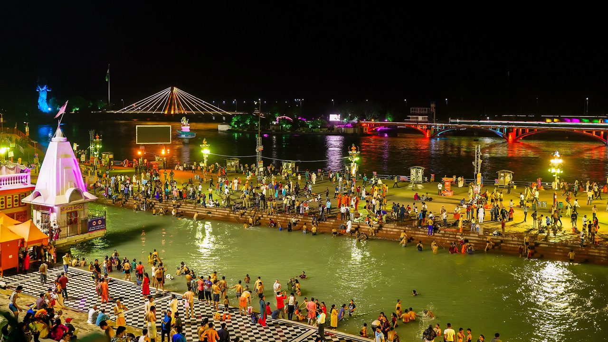

Uttarakhand
Haridwar: Gateway to the Gods
Welcome to Haridwar, the 'Gateway to the Lord', one of the seven holiest places (*Sapta Puri*) for Hindus. It is here that the sacred river Ganga emerges from the mountains and begins her journey across the plains. A pilgrimage to Haridwar is an immersion into the purifying power of Mother Ganga, a Tirtha made sacred by the nectar of immortality and the footprints of the gods.
The Puranic Origin: The Nectar of Immortality
The *Puranas* narrate the story of the *Samudra Manthan* (the churning of the cosmic ocean), from which the pot of nectar (*Amrita Kumbha*) emerged. During the ensuing struggle between the Devas and Asuras, a few drops of this divine nectar fell to earth at four sacred locations. Haridwar is one of these blessed sites, making its waters eternally sacred. It is for this reason that the monumental Kumbh Mela is held here every 12 years, drawing millions of pilgrims to its banks.
Key Spiritual Experiences
Ganga Aarti at Har Ki Pauri: The most enchanting experience in Haridwar is the evening Ganga Aarti at Har Ki Pauri, the 'Footsteps of the Lord'. This is the precise spot where the Ganga leaves the mountains. As the sun sets, priests perform a mesmerizing ritual with large fire lamps, and thousands of devotees offer floating lamps to the river, creating a breathtaking spectacle of light, sound, and devotion.
Holy Dip at Brahma Kund: The primary bathing ghat at Har Ki Pauri is known as Brahma Kund. A dip in these holy waters, especially during auspicious times, is believed to wash away all sins and pave the way for liberation (*mokṣa*). The powerful current and pure water invigorate the body and soul.
Mansa Devi and Chandi Devi Temples: Perched atop two adjacent hills are the sacred temples of Mansa Devi and Chandi Devi. These are considered *Siddha Pithas*, places where one's wishes are fulfilled. Pilgrims undertake a trek or use the ropeway to seek the blessings of these powerful forms of the Divine Mother.